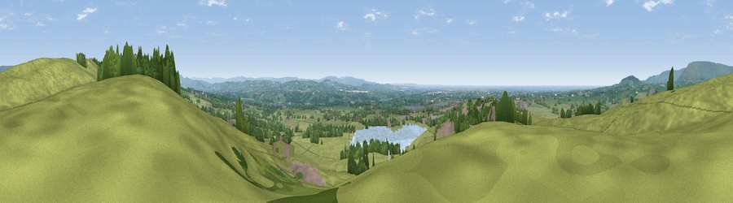

Viewpoint near Longridge
#4668 in England · top 9% of its area beats it · near LongridgeWhere it is
The exact computed spot (SD 62038 38425). Click the marker for map links.
The view, rendered

A 360° render of this exact spot computed from the terrain model, tree cover and land cover — summer colours, afternoon light, calibrated against photographs of famous viewpoints. Real trees, hedges and buildings will differ in detail.
The panorama
Grey silhouette: terrain skyline in each direction (720 bearings, Earth curvature and refraction included). Dashed green: skyline with trees (+15 m) and buildings (+8 m) as obstacles. Blue strip: how far the ground is visible on each bearing.
Where the view opens
Wedge length = distance to the farthest visible ground on that bearing (vegetation-aware). Rings at 10, 25 and 50 km.
What fills the view
69% grassland · 20% woodland · 7% water · 4% built-up · 1% cropland
Angular shares of the visible panorama (visual magnitude), not map area. Landscape diversity 0.41 (0–1 Shannon).
Key numbers
More beautiful places nearby
The staircase of upgrades: each row has a higher view potential than everything closer. Driving times are estimates from straight-line distance, calibrated against real road routing — check an actual route before setting out.
| Place | Direction | Drive | Score |
|---|---|---|---|
| Viewpoint near Chipping | NE · 2 km | ~5 min | 73.6 |
| Parlick | NNW · 7 km | ~14 min | 77.5 |
| Viewpoint near Scorton | NW · 14 km | ~26 min | 79.9 |
| Darwen Hill | SSE · 18 km | ~31 min | 80.7 |
| Rivington Pike | S · 25 km | ~40 min | 81.9 |
| White Brow | S · 26 km | ~42 min | 82.9 |
| Warton Crag | NNW · 37 km | ~55 min | 83.2 |
| Viewpoint near Grange-over-Sands | NNW · 46 km | ~66 min | 83.4 |
53.84068, -2.57841 · source: screening · position refined by local search. Computed location — check access rights before visiting.